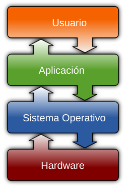
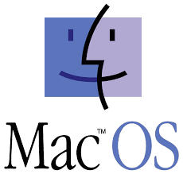

Un sistema operativo (SO) es el conjunto de programas de un sistema informático que gestiona los recursos del hardware y provee servicios a los programas de aplicación de software. Estos programas se ejecutan en modo privilegiado respecto de los restantes.
Windows
Es el nombre de una familia de distribuciones de software y sistemas operativos para PC, servidores, sistemas empotrados y anteriormente teléfonos inteligentes desarrollados y vendidos por Microsoft desde 1985 y disponibles para múltiples arquitecturas, tales como x86, x86-64 (x64) y ARM.

Linux
Es uno de los ejemplos mas prominentes de software libre, todo su codigo fuente puede ser utilizado, modificado y redistribuido libremente por cualquier persona, empresa o institucion, bajo los terminos de la licencia publica general de GNU, asi como de otra serie de licencias de derechos de autor.
Mac Os
Es una serie de sistemas operativos graficos desarrollados y comercializados por apple desde 2001. es el sistema operativo principal para la familia de computadoras macintosh de apple.

Ubuntu
es una distribucion GNU/linux basada en debian GNU/linux, que incluye principalmente software libre y de codigo abierto. puede utilizarse en ordenadores y servidores.
Como se trabaja un sistema operativo
Un sistema operativo (SO) funciona como intermediario entre el hardware de la computadora y las aplicaciones que utilizas. actua como administrador de recursos, gestionando la memoria, el procesador, los dispositivos de entrada/salida y los archivos para que las aplicaciones puedan ejecutarse correctamente